Explore Boise, ID
A Brief History
Boise developed along the Oregon Trail at a tree-lined river crossing that gave the city its French name, then became Idaho's capital when statehood arrived in 1890. Basque boarding houses, sandstone capitol grounds, and irrigation-project suburbs document how mining booms, reclamation canals, and federal land offices shaped a high-desert river city between the Rockies and the Snake River plain.
Attractions Map
Top Sights & Activities
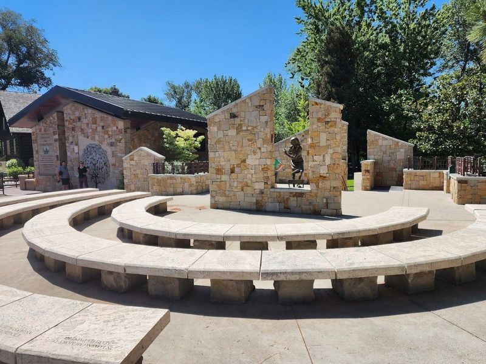
Idaho Anne Frank Human Rights Memorial
The Idaho Anne Frank Human Rights Memorial is a special place that honors Anne Frank and all the people who have struggled for human rights. The memorial features many stone quotes from throughout history about human rights, as well as a life-sized bronze statue of Anne Frank looking out an open window. It is a place where visitors can learn more about the importance of human rights and contemplate how they can help fight for them.
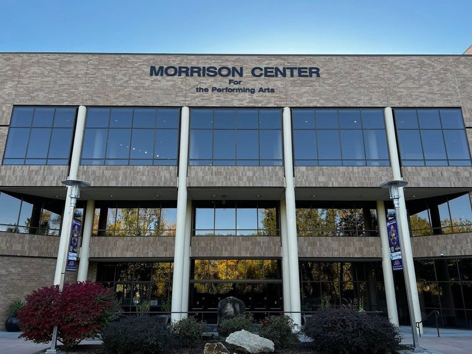
Morrison Center
Located on the picturesque banks of the Boise River near downtown Boise, the Morrison Center is a top-notch performing arts facility that greatly enriches the cultural scene of Boise and Idaho. It houses a 2,000-seat performance hall utilized by various groups including Boise State departments, touring acts, and local organizations like the Boise Opera and the Boise Philharmonic. The Velma V.
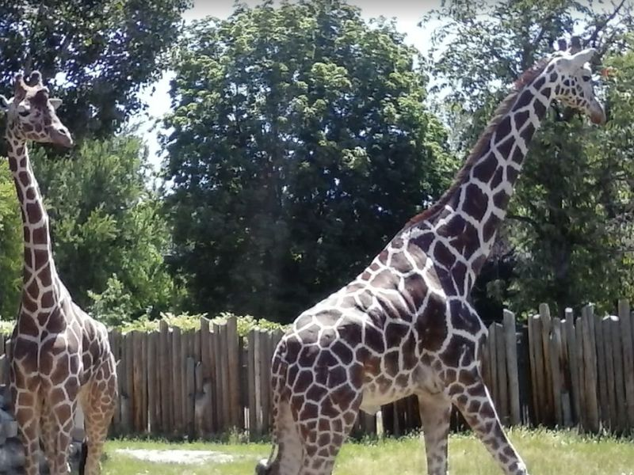
Zoo Boise
Nestled in the picturesque Julia Davis Park, Zoo Boise is a beloved attraction in Southern Idaho. This living science facility houses over 200 animals from 83 different species and offers diverse exhibits such as an African boat ride, kids' farm, and butterfly area. Supported by the Friends of Zoo Boise, the zoo aims to engage visitors in wildlife conservation through education programs and special events.
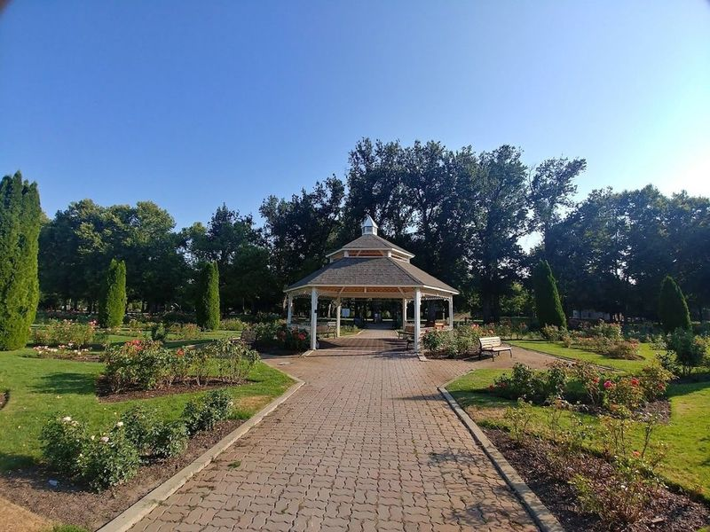
Julia Davis Park
Julia Davis Park, established in 1907, is Boise's oldest park and spans 43 acres of land. The park features the Julia Davis Rotary Plaza, Childhood Cancer Pavilion, a historic Bandshell, and a striking statue of Abraham Lincoln. Visitors can enjoy the serene Rose Garden with over 2,400 roses blooming year-round and rent paddleboats for the small pond.
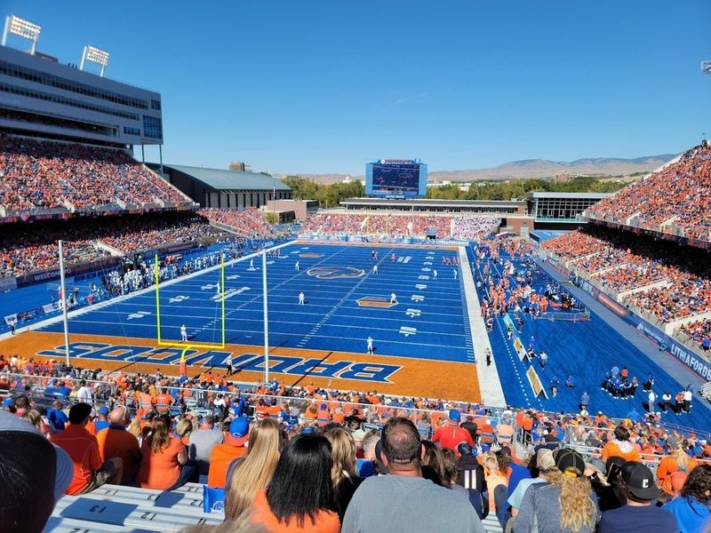
Albertsons Stadium
Albertsons Stadium, situated on the campus of Boise State University, is a renowned outdoor arena with a seating capacity of 36,000. It features unique sky center box suites and offers a variety of food and drink options for visitors. The stadium's most distinctive feature is its blue playing surface, making it the first non-green field in football history.
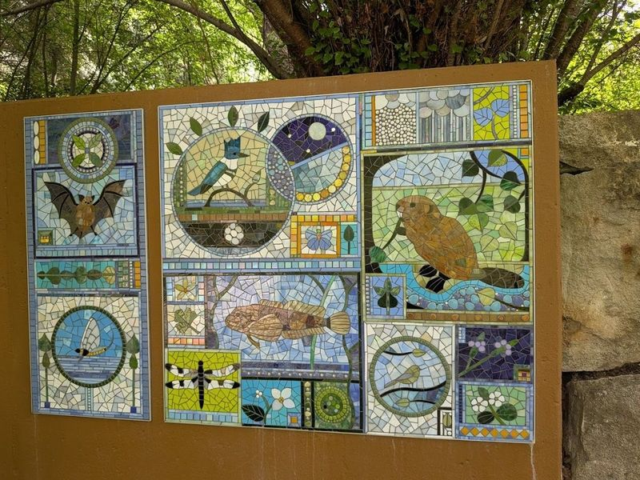
MK Nature Center - Idaho Fish and Game
The MK Nature Center, part of the Boise River Greenbelt, offers a unique experience with its StreamWalk featuring underwater fish viewing areas. The center is surrounded by diverse landscapes and wildlife, making it an ideal spot for nature enthusiasts. Visitors can also explore nearby attractions such as wineries, museums, and the Boise River for tubing. The center's grounds are open from sunrise to sunset, while the Visitors Center welcomes guests from Tuesday to Friday.
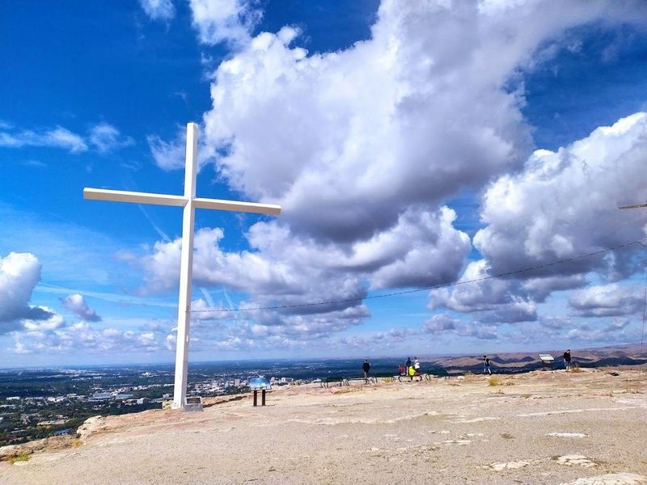
Table Rock
Table Rock offers an view of the Treasure Valley and the Owyhee Mountains. The 3.7-mile hike to the sandstone plateau is steep but popular, with incredible views as a reward. Along the trail, spot areas where inmates once quarried sandstone. The hike takes about an hour and 20 minutes round trip, with informative boards along the way describing the geography and history in detail.
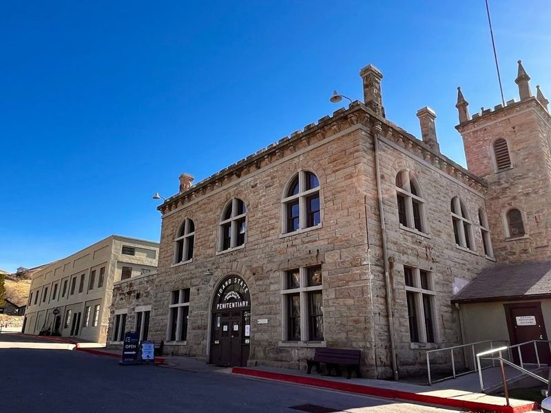
Old Idaho Penitentiary Site
The Old Idaho Penitentiary Site, located in Boise, is a historic prison complex that operated from 1872 to 1973. It features over 30 buildings and offers self-guided walking tours and special exhibitions. The site has a dark history, having housed notorious inmates such as Harry Orchard and Lyda Southard. With at least 110 recorded deaths within its walls, the prison was eventually closed in 1973 due to riots that caused significant damage.
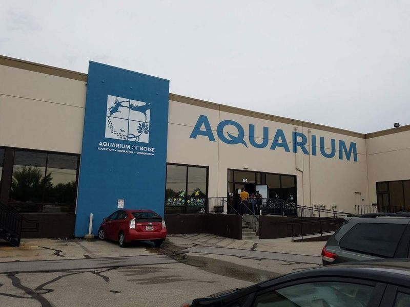
Aquarium of Boise
The Aquarium of Boise is a delightful destination for families and marine enthusiasts alike, offering an engaging experience with over 250 species of aquatic life. This hands-on aquarium features interactive touch tanks where visitors can feel and even hold fascinating creatures like rays, crabs, and starfish. One of the highlights includes the Shark and Ray pool, where guests can feed these magnificent animals.
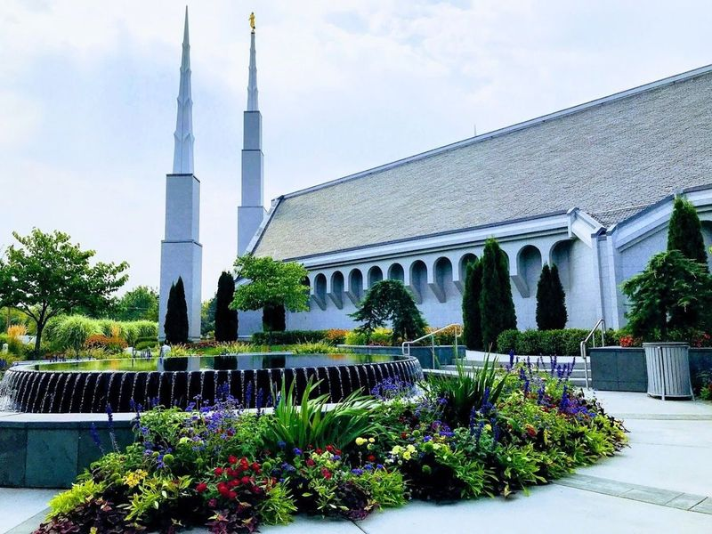
Boise Idaho Temple
Boise Idaho Temple anchors a familiar sightseeing stop in Boise, ID. Visitors encounter it along the city’s central routes through United States, often combining the visit with nearby parks, museums, and historic streets on the same itinerary. Street-level access and clear signage make it easy to reach on foot or by public transit from downtown districts.
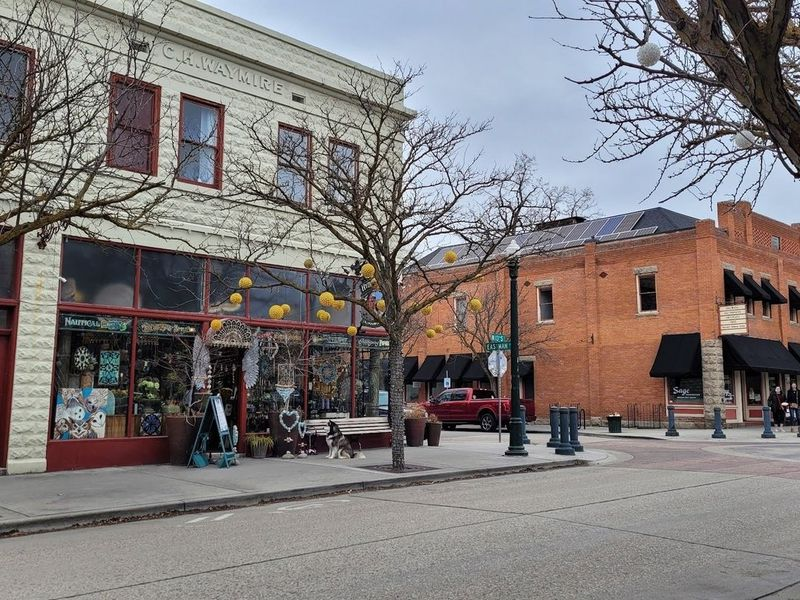
Hyde Park
Hyde Park, situated in the North End of Boise, is a historic and charming neighborhood that dates back to the early 20th century. Initially serving as the city's first suburban shopping area, it has evolved into a bustling and upscale district with an array of eateries, trendy bars, and specialty shops. Designated as a National Historic Place in 1982, Hyde Park boasts early-20th-century buildings housing local restaurants, cafes, and boutiques.
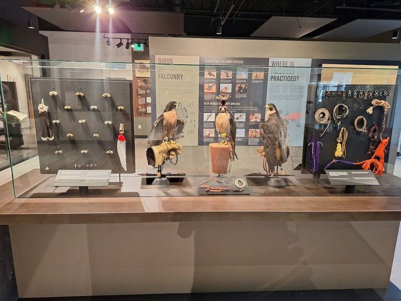
The Peregrine Fund's World Center For Birds of Prey
Discover the wonders of The Peregrine Fund's World Center for Birds of Prey, an indoor/outdoor facility dedicated to the conservation and research of raptors. The center houses live falcons, eagles, vultures, hawks, and owls while also serving as a research hub focused on understanding the health, reproduction, and general biology of these magnificent birds.
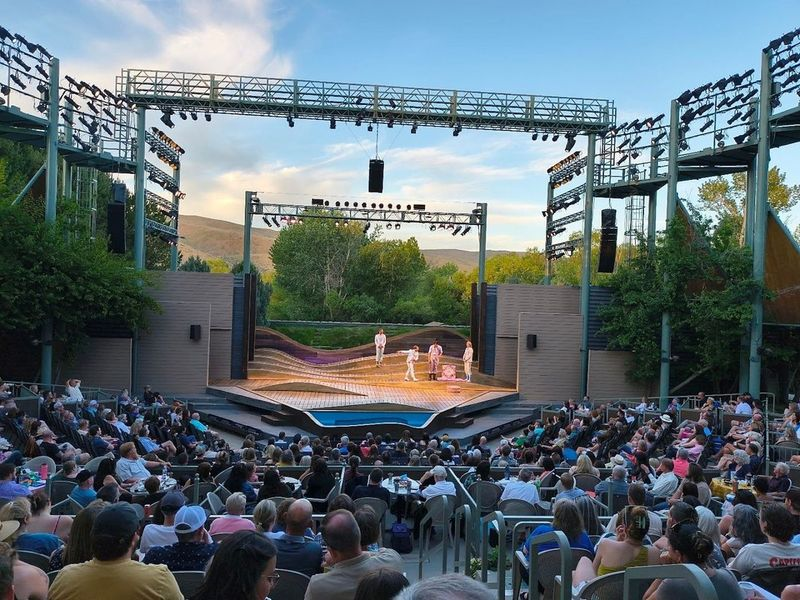
Idaho Shakespeare Festival
The Idaho Shakespeare Festival has been a staple of Boise's theater scene since 1977, offering classic musicals, new works by BIPOC playwrights, and opportunities for aspiring actors. The festival takes place at the Festival Amphitheater & Reserve, providing a unique outdoor theater experience where local wildlife adds to the ambiance.